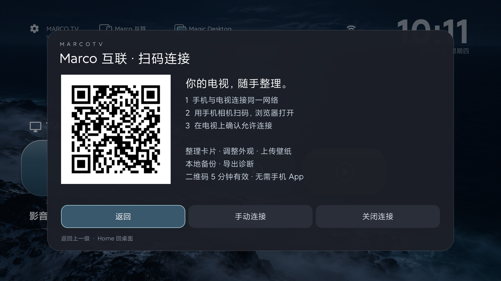
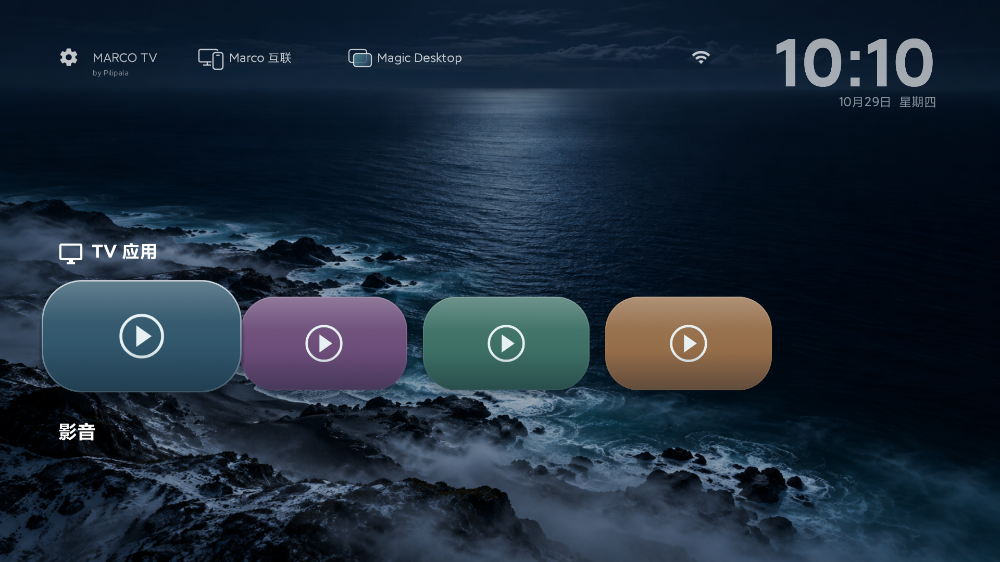
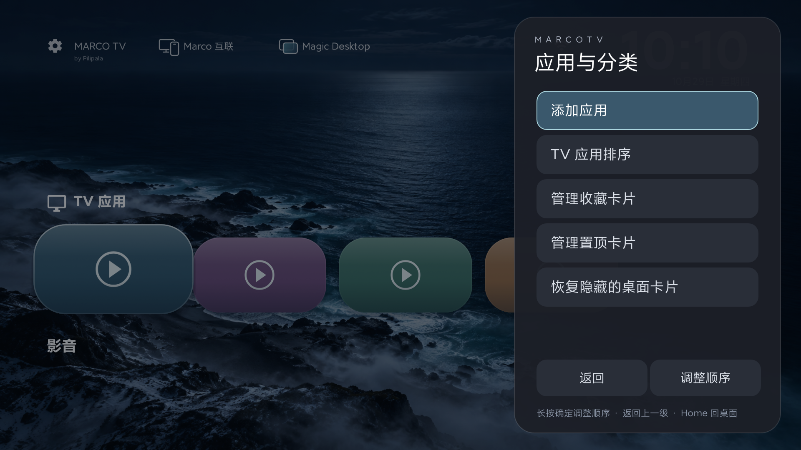
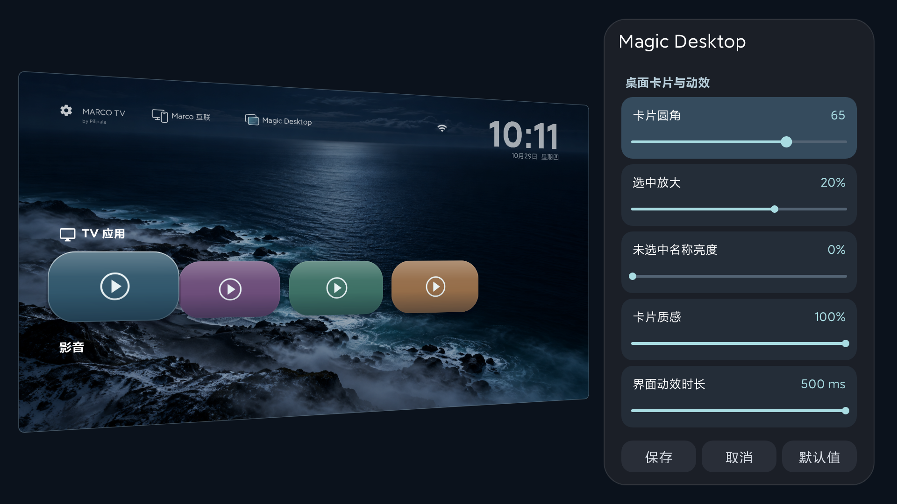
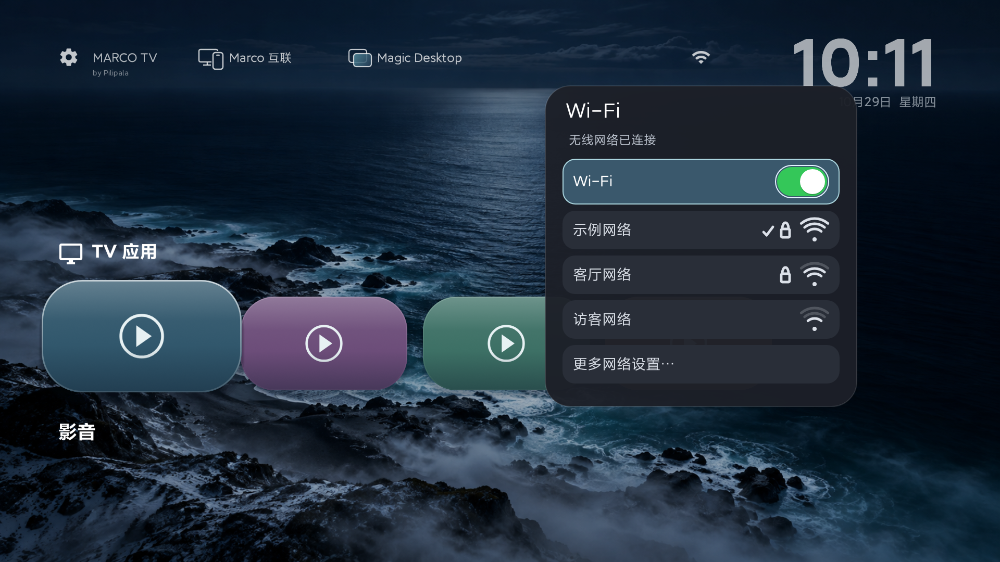

Pilipala 开发的免费开源 Android 电视桌面。横向卡片、连续焦点动画、粗体时间与日期、风景壁纸、时钟屏保，以及适合遥控器的自定义设置。
当前稳定版：0.14.0 · 发布于 2026 年 10 月 29 日 · 约 7.8MB
可覆盖升级并保留配置，无需先卸载。功能与兼容范围请阅读说明。
校验值 SHA256：0bd3e454f9ba1bef2077bd8945c56679317fe6c01b6fa6520653329a28225e4e
下载后对一下这串字符，不一样就重新下载，不要装。
从电视首页打开 Marco 互联，手机扫码、电视确认。无需手机 App，即可整理卡片、预览外观、上传壁纸、下载本地备份与脱敏诊断。
仅限同一局域网，可随时断开。当前不提供全局遥控、投屏或云端远程控制。

0.14.0 小米 Android 9 实机示例，私人卡片与连接信息均已替换。
查看 Marco 互联与新版界面 → 全部功能与使用条件首页新入口，20 项参数集中调整。左侧是放大的 3D 桌面预览，右侧是窄参数面板；设置子页原位切换，返回恢复原焦点。




本页使用 0.14.0 小米 Android 9 新版实机截图，全部采用临时示例内容。查看完整产品介绍与各模块使用条件 →
当前提供 0.14.0 正式版。体验渠道与稳定渠道当前提供同一正式版，原 RC 用户可直接覆盖升级。 更多机型等待实测反馈，欢迎加入测试，分享你的使用情况。
安装后到“维护与帮助 → 软件更新”检查更新，日常使用选择稳定版渠道。镜像优先，失败后尝试 GitHub；可选自动下载，安装仍需确认。0.11.1 没有在线更新，需先手动覆盖安装。每次 APK 更新后，最近任务辅助服务仍需电脑重新启动。
选择电视系统和手边设备，让向导帮你选择安装路线。Windows 电脑与安卓手机可使用免费安装助手；电视浏览器和厂商文件接收也有对应步骤。
助手 1.0.0 内含桌面 0.12.0，仅支持普通网络 ADB，首次连接需电视授权；无线配对码、iOS 助手暂不支持。使用说明与验证范围
MarcoTV-0.14.0.apk 复制到 U 盘根目录完整安装说明、使用说明、各品牌电视设置入口、常见问题，见原项目文档：github.com/Pilipala9919/MarcoTV
备份只做本地快照和用户主动文件导出，不上云；诊断只保存在电视本地，可关闭、清除和预览后导出，不会自动上传。报告里不含 Wi-Fi 名称、IP、节目、视频地址和密码。
原项目：Pilipala9919 / MarcoTV · 协议 GPL-3.0-only · 版权 © 2026 Pilipala
本站为镜像站，只做展示和下载中转，方便国内访问；最新版本、问题反馈和源码以 GitHub 原仓库为准。本页内容整理自原项目 README 与文档，版本信息以 0.14.0 稳定版为准，镜像上次同步于 2026 年 10 月 29 日。本站每天同步稳定版下载页与两条电视更新索引，经校验后由 Cloudflare 自动部署。体验版不会推给稳定渠道。